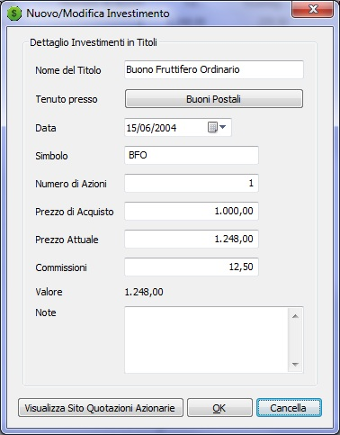
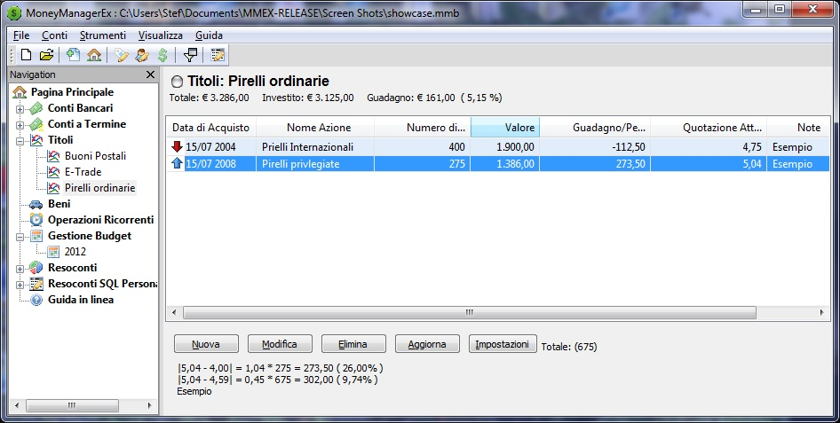

Questa è una semplice visualizzazione di come impostare un conto.


Una volta finito torna indietro alla 'Pagina Principale'. Noterai il nuovo
conto investimenti 'ML: Roth IRA' sotto 'Titoli' sul lato sinistro del pannello di navigazione.
Quando clicchi su un conto, si aprirà la schermata del conto relativo. Per
conto corrente/libretti risparmio, qui è dove puoi visualizzare ed inserire le operazioni. Per
conto investimenti, è dove puoi visualizzare e modificare le tue attività d'investimento.

Quando si clicca su 'Nuovo' apparirà un box di dialogo a scomparsa dove inserire i dati.

E questo è come i vostri investimenti appariranno sullo schermo.

Se si clicca 'Titoli' nel pannello di navigazione a sinistra,
si avrà una panoramica di tutti i vostri conti d'investimento.

La 'Pagina Principale' mostrerà il valore dei vostri Titoli e Partecipazioni.